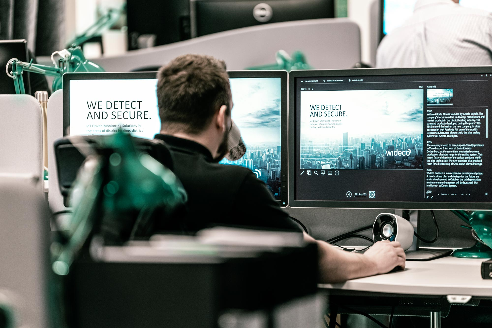

<!DOCTYPE html>
<html lang="sw">

<head>
    <meta charset="UTF-8">
    <meta http-equiv="X-UA-Compatible" content="IE=edge">
    <meta name="viewport" content="width=device-width, initial-scale=1.0">
    <title>Jens konstiga reptition</title>
    <link rel="preconnect" href="https://fonts.googleapis.com"><link rel="preconnect" href="https://fonts.gstatic.com" crossorigin><link href="https://fonts.googleapis.com/css2?family=Merriweather&family=Rubik+80s+Fade&display=swap" rel="stylesheet">
   <link rel="stylesheet" href="style.css">
</head>

<body>

</body>
<main>
    <h1>Viktigatse tex</h1>
    <h2>mindre viktig text</h2>
    <h3>enu mindre viktig text</h3>
    <section>Här kan man lägga till olika sektioner av texten</section>

    <p>
    <article>
        <h1>En text som kan vara mer självständig jämfört med resten</h1>
        
    </article>
    </p>

</main>

</html>